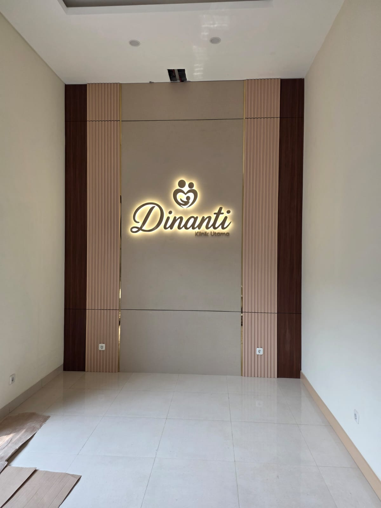

Sains reproduksi berstandar RTAC, dengan ketulusan hati untuk Ayah & Bunda.
Karena itu, di Dinanti Ayah & Bunda diperiksa bersama — setara, tanpa saling menyalahkan.
Gratis & privat via WhatsApp
Paket Harmoni Berdua, 1 hari
Alami, IUI, atau IVF
Care coordinator & psikolog

Setelah 4 tahun menanti karena PCOS, anak pertama kami kini genap 6 bulan.
Pemeriksaan suami sangat privat. Ternyata varikokel, dan bisa ditangani.
Usia 38 dan pernah gagal. Di sini kami mendapat penjelasan jujur dan tidak merasa sendirian.